Éditeur de code source

Pourquoi un autre éditeur
de texte?
Simple, je n'ai pas aimé tous les autres, ils étaient tous trop plat. Ayant de toute façon utilisé Gedit pendant des années, il devenait de plus en plus difficile de pouvoir le compiler sans les tas de dépendances GNOME. En fouillant un peu, les éditeurs de texte sous Linux ont l'air TRÈS simples (Leafpad) ou bêtement complexes (GVim, Bluefish), en essayant d'être tout pour tout le monde.
Un des meilleurs éditeurs de texte que j'ai utilisé est BBEdit mais qui n'est disponible que sous Mac, donc j'ai serré les dents et décidé d'écrire mon propre éditeur avec les meilleurs morceaux de BBEdit (le nom KKEdit est un clin d'oeil à BBEdit), Gedit et Leafpad. Une interface épurée simple, pas de dépendances majeures, avec seulement les fonctionnalités que j'utilise tout le temps, et TA DAH! KKEdit.
Ce qu'il n'est pas!
KKEdit n'est pas un traitement de texte ou un éditeur de pages web, il n'est pas un IDE! Il ne codera pas à votre place, il n'insistera pas sur l'insertion des accolades (VRAIMENT énervant!), il ne vous obligera pas à utiliser un style particulier, il ne vous demande pas de vous casser tous les doigts en essayant de faire des combinaisons de touches étrange et il n'est pas lié à un distribution particulière, oh oui et il ne vous coûtera pas un centime!
Ce qu'il est et fait
KKEdit est éditeur de texte simple avec coloration syntaxique.
Il dispose également d'un menu de fonctions qui vous permet de passer instantanément à une définition de fonction, un menu de navigation qui va chercher dans tous les fichiers ouverts pour une définition de fonction, puis passer à cet onglet et aller à la ligne appropriée s'il ne peut pas trouver un définition dans tous les fichiers ouverts, il fera une recherche récursive dans le dossier du document sélectionné, vous pouvez également mettre en évidence une directive # include et il recherchera et essayera d'ouvrir le fichier, les en-têtes entourées par <> seront recherchées dans /usr/include, celles entourées par "" seront recherchées dans le dossier du fichier en cours d'édition.
Des outils externes peuvent être ajoutés soit globalement, soit localement et, quand exécutés peuvent remplacer le texte selectionné avec leur sortie, remplacer le texte dans tous les fichiers, être exécutés dans un terminal ou vous pouvez choisir d'ignorer la sortie du script, BASH, Python et Perl peuvent être utilisés pour le langage du script ou n'importe quel interpréteur qui utilise '#' comme marqueur de commentaire.
Un certain nombre de scripts de démonstration simples sont inclus dans le dossier "demotoools".
Vous pouvez glisser et déposer un fichier sur la barre d'outils/le menu principal pour ouvrir un fichier.
Les sessions peuvent être sauvegardées et restaurées.
Vous pouvez placer autant de signets que vous le souhaitez et n'import'où, la sélection d'un signet depuis le menu basculera sur cet onglet et passera à la ligne appropriée.
Il suffit de taper un numéro de ligne dans la zone de texte sur la barre d'outils pour passer directement à cette ligne.
Manuel
Simple, je n'ai pas aimé tous les autres, ils étaient tous trop plat. Ayant de toute façon utilisé Gedit pendant des années, il devenait de plus en plus difficile de pouvoir le compiler sans les tas de dépendances GNOME. En fouillant un peu, les éditeurs de texte sous Linux ont l'air TRÈS simples (Leafpad) ou bêtement complexes (GVim, Bluefish), en essayant d'être tout pour tout le monde.
Un des meilleurs éditeurs de texte que j'ai utilisé est BBEdit mais qui n'est disponible que sous Mac, donc j'ai serré les dents et décidé d'écrire mon propre éditeur avec les meilleurs morceaux de BBEdit (le nom KKEdit est un clin d'oeil à BBEdit), Gedit et Leafpad. Une interface épurée simple, pas de dépendances majeures, avec seulement les fonctionnalités que j'utilise tout le temps, et TA DAH! KKEdit.
Ce qu'il n'est pas!
KKEdit n'est pas un traitement de texte ou un éditeur de pages web, il n'est pas un IDE! Il ne codera pas à votre place, il n'insistera pas sur l'insertion des accolades (VRAIMENT énervant!), il ne vous obligera pas à utiliser un style particulier, il ne vous demande pas de vous casser tous les doigts en essayant de faire des combinaisons de touches étrange et il n'est pas lié à un distribution particulière, oh oui et il ne vous coûtera pas un centime!
Ce qu'il est et fait
KKEdit est éditeur de texte simple avec coloration syntaxique.
Il dispose également d'un menu de fonctions qui vous permet de passer instantanément à une définition de fonction, un menu de navigation qui va chercher dans tous les fichiers ouverts pour une définition de fonction, puis passer à cet onglet et aller à la ligne appropriée s'il ne peut pas trouver un définition dans tous les fichiers ouverts, il fera une recherche récursive dans le dossier du document sélectionné, vous pouvez également mettre en évidence une directive # include et il recherchera et essayera d'ouvrir le fichier, les en-têtes entourées par <> seront recherchées dans /usr/include, celles entourées par "" seront recherchées dans le dossier du fichier en cours d'édition.
Des outils externes peuvent être ajoutés soit globalement, soit localement et, quand exécutés peuvent remplacer le texte selectionné avec leur sortie, remplacer le texte dans tous les fichiers, être exécutés dans un terminal ou vous pouvez choisir d'ignorer la sortie du script, BASH, Python et Perl peuvent être utilisés pour le langage du script ou n'importe quel interpréteur qui utilise '#' comme marqueur de commentaire.
Un certain nombre de scripts de démonstration simples sont inclus dans le dossier "demotoools".
Vous pouvez glisser et déposer un fichier sur la barre d'outils/le menu principal pour ouvrir un fichier.
Les sessions peuvent être sauvegardées et restaurées.
Vous pouvez placer autant de signets que vous le souhaitez et n'import'où, la sélection d'un signet depuis le menu basculera sur cet onglet et passera à la ligne appropriée.
Il suffit de taper un numéro de ligne dans la zone de texte sur la barre d'outils pour passer directement à cette ligne.
Manuel
Menu de navigation
Menu des fonctions
Menu des outils
Préférences
Personnaliser la barre d'outils
Autres fonctionnalités
Comment l'obtenir et le compiler
Signaler un bogue
Menu de navigation
Le menu de navigation comporte cinq sous-menus - Aller à la définition, Ouvrir l'en-tête, Aller à la ligne, Chercher une définition et Chercher dans la documentation Gtk.
Pour aller là où une fonction etc est définie, sélectionnez-la et choisissez 'Aller à la définition' KKEdit cherchera ensuite dans les fichiers ouverts la définition passera à cette page et surlignera la ligne appropriée comme ceci:
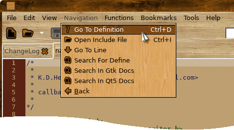
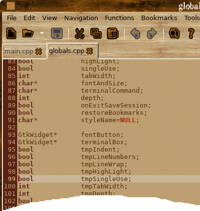
Comme vous pouvez le voir, comme la définition n'était pas dans un fichier ouvert, KKEdit recherche la définition récursivement à partir du dossier où le fichier a été ouvert et s'il est trouvé ouvre le fichier et sélectionne la ligne contenant la définition.
La profondeur de la recherche pour trouver une définition se trouve dans les prefs et 1 par défaut c'est à dire ne regarde que les définitions dans des fichiers dans le même dossier que tous les documents ouverts, faire attention à la définition de cette trop élevé car il peut causer un retard indésirable quand un clic droit si il doit regarder dans un grand nombre de sous-dossiers.
Vous pouvez également ouvrir une en-tête. Il suffit de sélectionner la ligne et choisissez Ouvrir l'en-tête comme ceci:
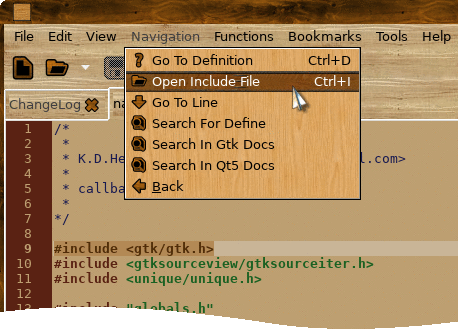
Les en-têtes sont recherchées dans /usr/include ou dans le répertoire du document en cours d'édition, cela dépend si le nom du fichier est entouré par '<>' ou ' "" '.
Chercher une définition ouvrira une zone de saisie et vous permettra d'entrer une définition ou une partie d'une définition et essayera de la trouver dans les endroits habituels (ouverture du fichier si nécessaire), la recherche est insensible à la casse.
Menu des fonctions
Le menu des fonctions contient une liste de toutes les fonctions définies, variables et définitions qui sont visibles dans ce fichier. Pour passer à la définition de la fonction appropriée, il suffit de le sélectionner depuis le menu comme ceci:
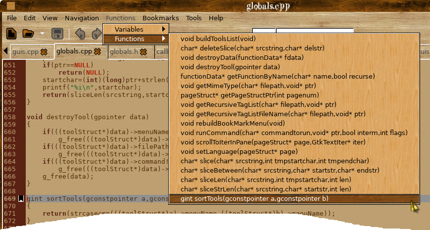
Le menu des fonctions sera mis à jour après l'enregistrement d'un fichier ou un changement d'onglets.
Vous pouvez sélectionner la manière dont le menu des fonctions est affiché / réglé dans les préférences.
Menu des outils
Le menu des outils vous permet d'exécuter un script externe, par exemple, pour ouvrir un terminal dans le répertoire courant:

Les outils externes peuvent être soit ajoutés à l'échelle mondiale dans /usr/share/KKEdit/tools (si vous avez installé avec --prefix=/usr) ou localement dans ~/.KKEdit/tools.
Quatre variables d'environnement sont passées par les outils externes:
KKEDIT_CURRENTFILE - Chemin du document actif.
KKEDIT_CURRENTDIR - Répertoire contenant le document actif.
KKEDIT_SELECTION - Le texte sélectionné.
KKEDIT_DATADIR - Dossier du répertoire global (par exemple /usr/share/KKEdit).
KKEDIT_HTMLFILE - Fichier temporaire pour l'affichage html dans le visionneur de documents
Plus de variables peuvent être définies ultérieurement.
Les outils externes sont triés par nom dans le menu et le dialogue d'édition des outils.
Les outils externes peuvent être écrits à la main ou par l'intermédiaire du menu 'Outils-> Nouveau' comme ceci:
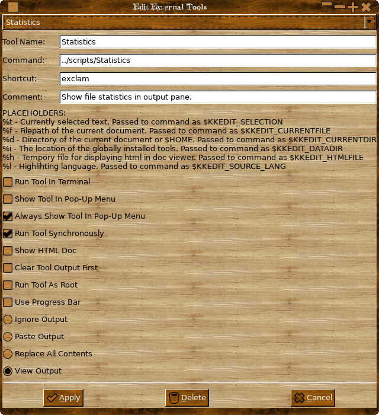
Les détenteurs de lieu sont:
%t - Le texte actuellement sélectionné, identique à la variable d'environnement $KKEDIT_SELECTION passée à la commande.
%f - Chemin du document en cours, identique à la variable d'environnement $KKEDIT_CURRENTFILE passée à la commande.
%d - Répertoire du document actuel ou $HOME, identique à la variable d'environnement $KKEDIT_CURRENTDIR passée à la commande.
%i - L'emplacement des outils disponibles pour le système entier, identique à la variable d'environnement $KKEDIT_DATADIR passée à la commande.
%h - Fichier temporaire pour l'affichage html dans le visionneur de documents, identique à la variable d'environnement $KKEDIT_HTMLFILE passée à la commande.
Sélectionner 'Afficher la sortie' enverra la sortie de l'outil à un volet en bas de l'éditeur, vous pouvez modifier la taille en faisant glisser la poignée et cacher/montrer le volet depuis le menu 'Affichage', seul stdout est capturé à partir de la sortie de l'outil, si vous voulez capturer stderr vous devez le rediriger vers stdout, vous ne pouvez pas capturer stdin, si vous avez besoin d'interagir avec l'outil, utilisez l'option 'Exécuter dans un terminal'.
Vous pouvez aussi éventuellement définir un raccourci clavier, il suffit de cliquer dans la boîte de raccourcis, maintenez CONTROL enfoncée et appuyez sur une autre touche avec ou sans MAJ, pour supprimer le raccourci, il suffit d'appuyer sur la touche 'Supprimer'.
Le volet de sortie sera automatiquement affiché pour n'importe quel outil qui a cette option sélectionnée, comme ceci:
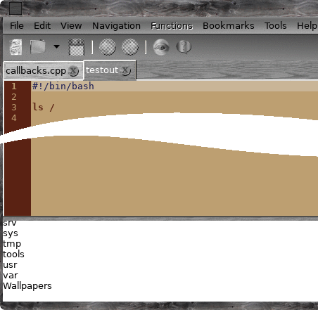
Cet exemple utilise l'outil 'Exécuter en tant qu'administrateur le script' disponible dans le dossier 'Example External Tools' inclus avec cette archive.
IMPORTANT
Lorsque vous utilisez un outil qui exécute une commande en tant qu'administrateur et qu'une interface graphique de privilèges administrateur n'a pas été définie, l'outil est automatiquement exécuté dans un terminal.
Sélectionner 'Montrer la documentation HTML' affichera le fichier $KKEDIT_HTMLFILE soit dans le visionneur de documents Gtk, soit dans votre navigateur par défaut, il est utilisé dans l'exemple d'outils installé 'Open Man Page' (Ouvrir la page de manuel) pour afficher la page de manuel de la sélection (si elle existe et si vous avez installé man2html, ce qui est souvent le cas).
Seuls les outils qui ont sélectionné "Montrer l'outil dans le menu pop-up" apparaîtront dans le menu pop-up si vous avez également sélectionné du texte.
Les outils qui ont le "Toujours afficher dans une fenêtre contextuelle" sélectionné montrer dans le menu contextuel indépendamment de w ue le texte est ou n'est pas sélectionnée.
Les commandes peuvent être composées comme 'cat /tmp/textfile|head', mais utiliser des tuyaux dans un terminal ne permet pas toujours d'avoir ce que vous voulez comme 'xterm -hold -e 'cat "/tmp/textfile"|tail -f'' qui fonctionnera et affichera la fin du fichier mais ne suivra pas correctement, c'est une fonctionnalité/un problème propre à xterm :(
Pour les commandes très complexes, créer un script et affecter à 'command' le chemin vers votre script, les chemins peuvent être absolus ou relatifs (voir les exemples de scripts).
Les outils peuvent être modifiés en sélectionnant depuis la liste déroulante, si vous tentez de modifier un outil installé globalement (c'est-à-dire dans /usr/share/KKEdit/tools), vous devez avoir les privilèges administrateurs.
Vous pouvez également afficher une barre de progression pour votre outil en cochant "Utiliser une barre de progression", un barre sera créée pour vous et vous pouvez la contrôler en écrivant des commandes simples dans un fichier, le chemin du fichier est contenu dans la variable d'environnement '$KKEDIT_BAR_CONTROL', vous pouvez écrire un nombre simple entre 0 et 100 pour définir la jauge, 'pulse' pour faire progresser la barre et 'quit' pour la supprimer, vous n'avez pas besoin d'écrire la commande 'quit', puisqu'elle sera envoyée automatiquement lorsque votre outil se termine, N.B. si vous réglez votre outil pour fonctionner de manière asynchrone, vous devez envoyer la commande 'quit' vous-même.
Il y a un exemple sur la façon de contrôler la barre dans les exemples d'outils dans '/usr/share/KKEdit/Example External Tools'.
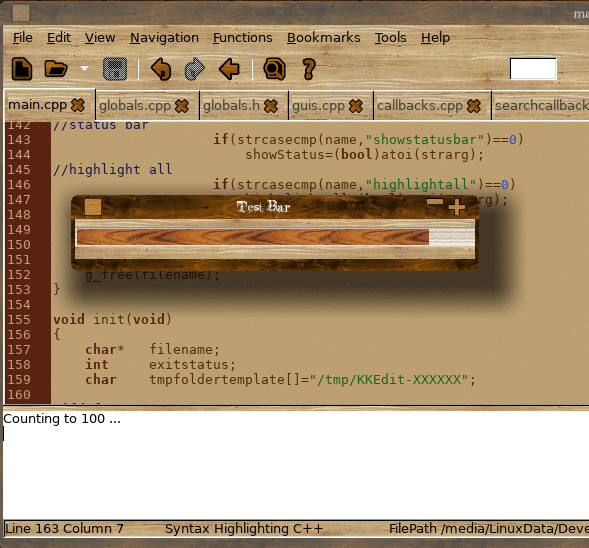
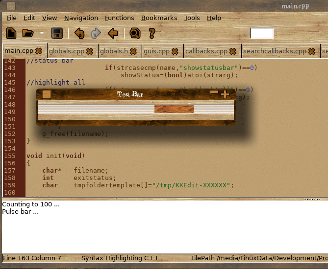
Le titre de la fenêtre de la barre de progression est automatiquement réglé sur le nom de votre outil.
Préférences
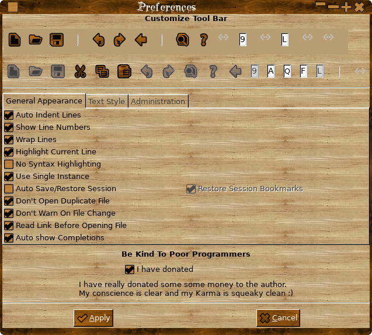
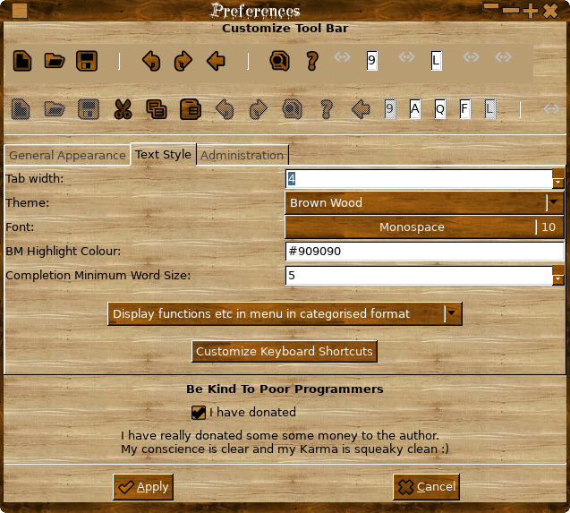
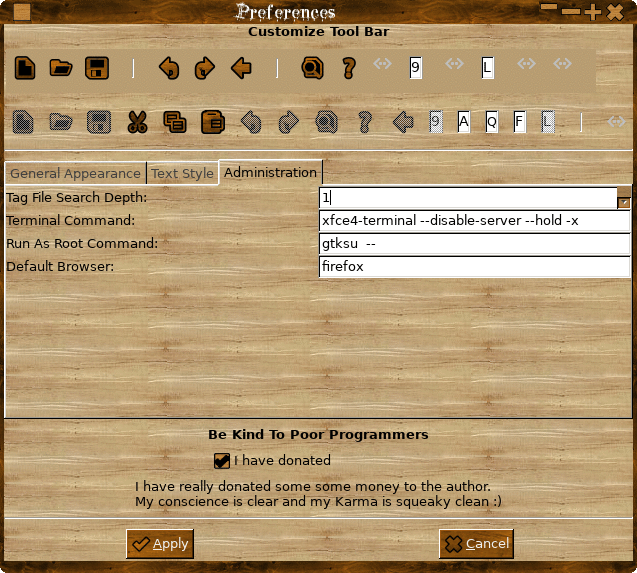
Le fichier de préférences est créé vers ~/.KKEdit/kkedit.rc et sera créé/recréé en quittant KKEdit.
Les préférences doivent être réglées à partir de 'Édition->Préférences'.
Vous pouvez définir la commande pour exécuter un outil externe dans un terminal à partir d'ici.
Sélectionner 'Ne pas ouvrir deux fois le même fichier' passera à l'onglet de ce fichier plutôt que d'ouvrir une autre copie.
Sélectionner 'Ne pas avertir lorsqu'un fichier a été modifié' supprimera les avertissements lorsqu'un fichier ouvert est modifié sur le disque (par une autre application), l'onglet sera toujours mis à jour.
L'option 'Commande d’exécution en tant qu'administrateur' vous permet de définir votre interface graphique de privilèges administrateur préférée, si cette option est vide, un terminal sera utilisé pour demander les mots de passe administrateurs ( Voir ici ), l'option 'Commande de terminal' sera utilisée pour ouvrir un terminal, si cette option est vide alors la commande 'xterm-e' sera utilisé par défaut.
Vous pouvez également régler la couleur de surlignage des lignes marquées par un signet, et aussi afficher/cacher la barre des signets.
Vous pouvez aussi personnaliser les raccourcis clavier depuis ce menu, il suffit de cliquer sur le bouton et vous obtiendrez une fenêtre dialogue comme ceci:
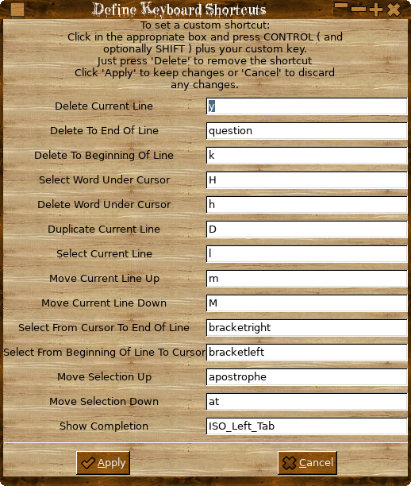
Pour modifier le raccourci par défaut, cliquez dans la boîte correspondante et appuyez sur CONTROL et votre choix de touches avec ou sans MAJ, les raccourcis doivent utiliser CONTROL.
Répétez la procédure ci-dessus jusqu'à ce que vous avez défini tous les raccourcis que vous souhaitez et cliquez sur 'Appliquer' pour conserver les modifications ou 'Annuler' pour... deviner quoi.
Vous pouvez également choisir d'ouvrir un fichier normalement ou en suivant le lien (s'il s'agit d'un lien symbolique) d'abord, cela signifie que le chemin sera soit le chemin vers le lien, soit le chemin vers le fichier réel, c'est util lorsque vous utilisez l'option 'Ouvrir' dans le menu de l'onglet puisque vous allez choisir de sélectionner les fichiers à ouvrir soit à partir du dossier où se trouve le lien, soit le dossier où se trouve le fichier réel, essayez et vouv verrez que c'est beaucoup moins compliqué que ça en a l'air !
Le 'Thème' peut être défini par les préférences via le menu déroulant, la mise à jour de la page en cours se fait en direct, cliquez sur 'Appliquer' pour définir globalement le thème ou sur 'Annuler' pour ignorer les changements.
Les thèmes sont stockés dans "/usr/share/gtksourceview-2.0/styles" (thèmes installés par défaut) ou localement dans '~/.gnome2/gedit/styles', pour la compatibilité avec gedit vu que la plupart des thèmes gktsourceview semblent être gedit-centrique ;)
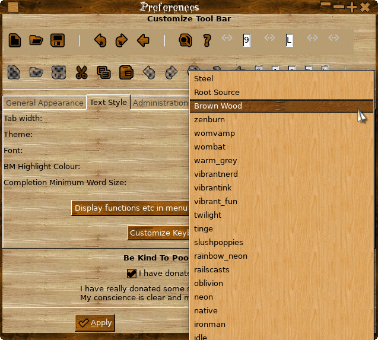
Personnaliser la barre d'outils
Vous pouvez personnaliser ce qui apparaît sur la barre d'outils en cliquant simplement sur un bouton pour l'ajouter au menu comme ceci:

Et ensuite, faites-le glisser à l'endroit où vous souhaitez qu'il apparaisse sur la barre d'outils comme ceci:

Pour supprimer un élément de la barre d'outils, il suffit de maintenir 'CONTROL' et cliquez sur l'élément à supprimer.
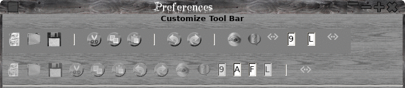
Certains éléments ne peuvent être ajoutés qu'une seule fois (par exemple : 'Enregistrer', 'Ouvrir', etc). Lorsqu'ils ont été ajoutés, ils seront grisés et ne pourront plus être ajoutés à nouveau. Les supprimer les rendront à nouveau disponibles, le séparateur et le détendeur peuvent être utilisés plusieurs fois.
Vous pouvez aussi choisir de cacher/afficher la barre d'outils depuis le menu 'Affichage'.
Autres fonctionnalités
Copier le nom du fichier depuis le menu de l'onglet.
Copier le chemin du fichier depuis le menu de l'onglet.
Vérifier l'orthographe du document depuis le menu de l'onglet.
Copier une définition de fonction.
Aller à la définition d'une fonction.
Placer un signet.
Instances unique ou multiples.
Ouvrir en affichage hexadécimal.
Trouver la définition de l'API dans la documentation Gtk.
Autre
Un clique droit sur l'onglet permet de copier le nom du fichier, son chemin, vérifier son orthographe, séparer/joindre la vue, choisir la coloration syntaxique et ouvrir rapidement d'autres fichiers dans le même répertoire que le fichier en cours d'édition (pratique pour ouvrir rapidement les en-têtes).
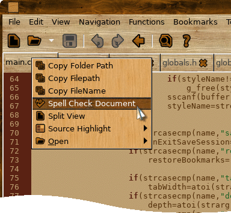
Le menu contextuel du document contient également la fonction 'Aller à la définition' pour plus de commodité.
Sélectionner la définition la copiera dans le presse-papiers.
S'il n'y a pas de définition valable, cette fonction du menu ne sera pas montré.
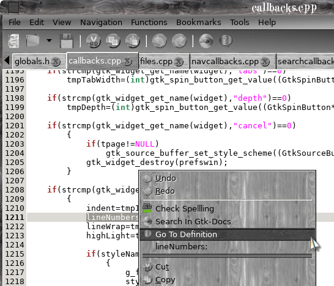
Le menu contextuel du clic droit:
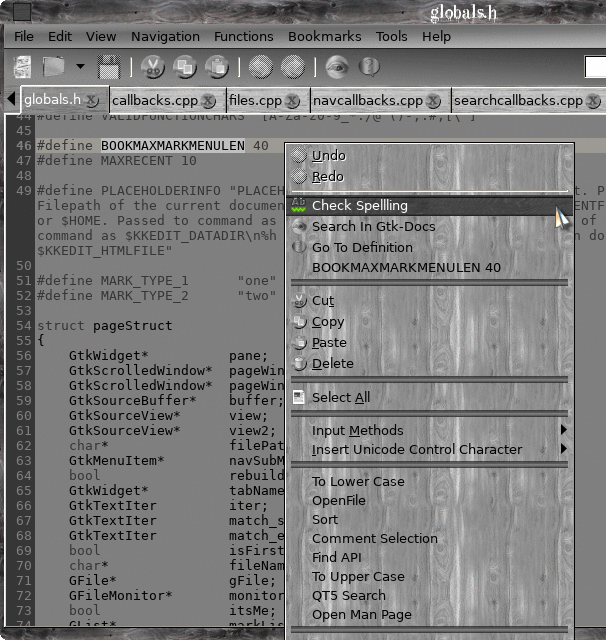
Dialogue du vérificateur orthographique
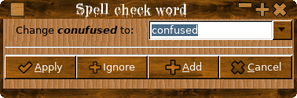
Signets
N'importe quelle quantité de signets peut être ajouté, en sélectionner un fera passer au document et à la ligne correspondants.
Les signets sont stockés grâce à la fonction 'Enregistrer la session' et peuvent être restaurés avec 'Restaurer la session avec les signets'.
Les signets sont placés de telle sorte que si vous placez le curseur sur une ligne avec un signet, il va être ajouté si cela n'a pas déjà été fait, ou supprimé si cela l'a été. Vous pouvez utiliser la fonction 'Placer un signet' depuis le menu principal ou le menu contextuel principal, vou pouvez aussi cliquer dans la barre des signets pour placer ou retirer un signet (vous verrez une petite icône de signet).
Vous pouvez retirer tous les signets de tous les documents ouverts en sélectionnant 'Retirer tous les signets' depuis le menu.
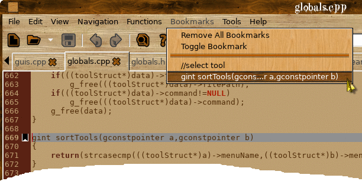
Vous pouvez ouvrir un fichier en affichage hexadécimal (ce n'est PAS un éditeur hexadécimal bien que cela pourrait changer ultérieurement) comme ceci:

Recherche dans l'API Gtk
Vous pouvez rechercher une déclaration d'API depuis n'importe quels documents Gtk (au format gtk-doc) installés en sélectionnant une partie ou la totalité d'un nom d'API comme ceci:
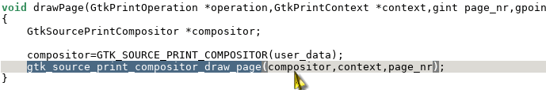
Et, ensuite, sélectionner 'Chercher dans la documentation Gtk' depuis le menu 'Navigation' ou depuis le menu du clic droit comme ceci:
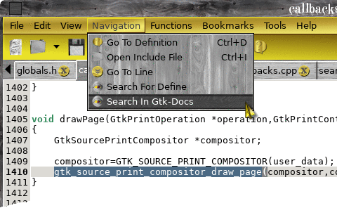
Si vous avez compilé avec l'option --enable-docviewer, vous aurez une fenêtre pop-up avec une liste des liens possibles vers l'API souhaitée. S'il n'y a qu'un seul lien possible, vous irez immédiatement vers ce dernier.
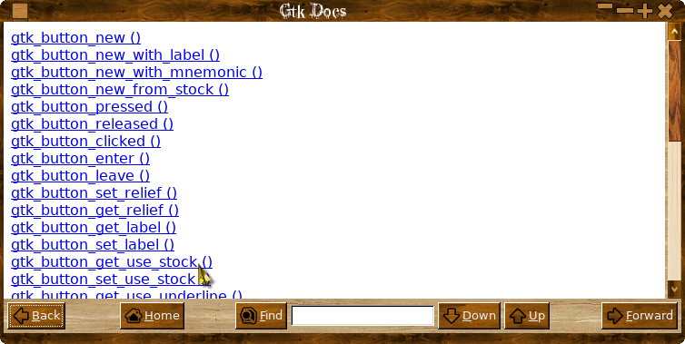
Cliquer sur le lien:
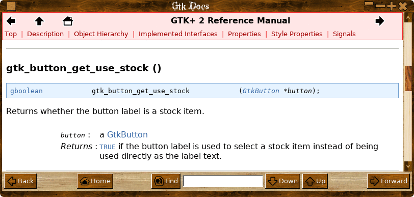
Les liens sont cliquables et peuvent être suivis dans le visionneur de documents Gtk. Les fonctions et autres peuvent être copiées et collées dans votre document.
Si vous avez sélectionné le nom 'gtk_button_get_use_stock' en entier, vous aurez été dans la situation montré par la capture d'écran.
Vous pouvez également entrer manuellement un terme pour la recherche dans la boîte. Pressez, ensuite, 'Entrer' ou cliquez sur 'Chercher'.
Vous pouvez chercher au sein de la page affichée en entrant un terme pour la recherche, puis en cliquant sur 'En bas' pour avancer dans la recherche et 'En haut' pour chercher avant.
Les autre fonctionnalités incluses:
La sauvegarde et la restauration de sessions peuvent être automatiques (avec ou sans signets) au démarrage et à l'arrêt.
Vous pouvez sauvegarder et restaurer des sessions manuellement via le menu 'Fichier'. Vous pouvez aussi restaurer une session avec ou sans les signets sauvegardés (les signets sont automatiquement sauvegardés avec la session). Si vous modifiez un fichier sur le disque sans réitérer la sauvegarde de session, il se peut que certains signets sont décalés.
Vous pouvez exécuter KKEdit soit avec une seule instance, soit avec plusieurs instances, selon l'option correspondante dans le menu des préférences. Il ne peut y avoir qu'une seule instance par espace de travail, lorsque vous êtes en instance unique.
Vous pouvez également ouvrir une nouvelle instance de KKEdit depuis le menu 'Fichier' indépendamment des préférences.
Exécution en tant qu'administrateur
Vous pouvez aussi ouvrir une nouvelle instance de KKEdit avec les privilèges administrateur depuis le menu 'Fichier'. Vous pouvez définir quelle interface utiliser pour obtenir ces privilèges dans la fenêtre des préférences. Je recommenderais GtkSu ( Disponible ici ), qui s'utilise comme cela : 'gtksu --'. Les utilisateurs d'Ubuntu peuvent être amenés à utiliser 'gtksu -- sudo' pour arrêter les plaintes de gtk3. Les autres possibilités sont (selon votre système et ce qui est installé dessus) 'gksu --', 'sudo -A' et ainsi de suite. Si aucune interface graphique n'est installée ou spécifiée, un terminal sera utilisé en fonction de vos préférences.
!! ATTENTION !!
Éditer des fichier en tant qu'administrateur peut sérieusement endommager votre système si c'est utiliser de manière incorrecte.
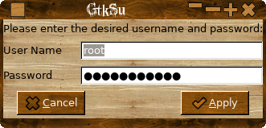
Trouver/Remplacer
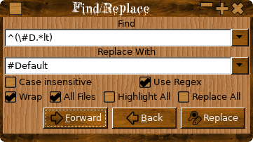
La recherche et le remplacement utilisent les expressions rationnelles, alors que la recherche rapide de la barre d'outils ne le fait pas. Le texte dans dans la boîte de dialogue "Trouver/Remplacer" est pris comme une chaîne littérale.
Les caractères tels que \n, \t, etc sont interprétés comme leurs équivalents (par exemple : \t -> 0x9). Pour chercher la chaîne '\n', vous devriez utiliser '\\n'.
Les expressions rationnelles utilisées par KKEdit utilisent les expressions rationnelles étendues mais n'utilisent pas la chaîne '\s' pour représenter un espace. Pour inclure un espace dans votre chaîne de recherche, utilisez '[ ]' pour un simple espace, '[ ]+' pour rechercher un espace ou plus et ainsi de suite. '[[:space:]]' correspond à n'importe quelle espace, retour à la ligne inclus.
Vous pouvez trouver et remplacer dans un seul fichier ou dans plusieurs fichiers ouverts. Si vous choisissez de remplacer tout dans tous les fichiers ouverts, il vous sera demandé de confirmer l'action.
L'option de recherche circulaire est ignorée lorsque vous recherchez dans tous les fichiers ouverts.
Vous pouvez aller à une ligne en utilisant l'entrée dans la barre d'outils:
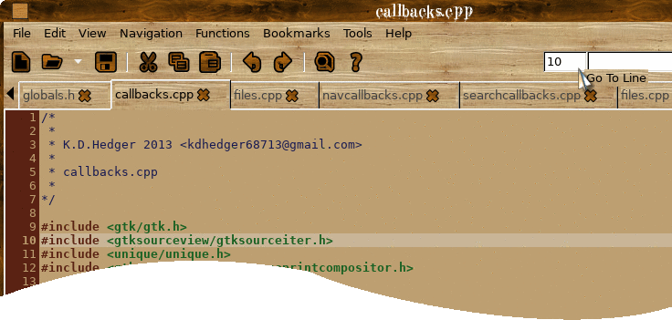
Vous pouvez effectuer une recherche rapide en tapant dans la boîte de recherche dans la barre d'outils:
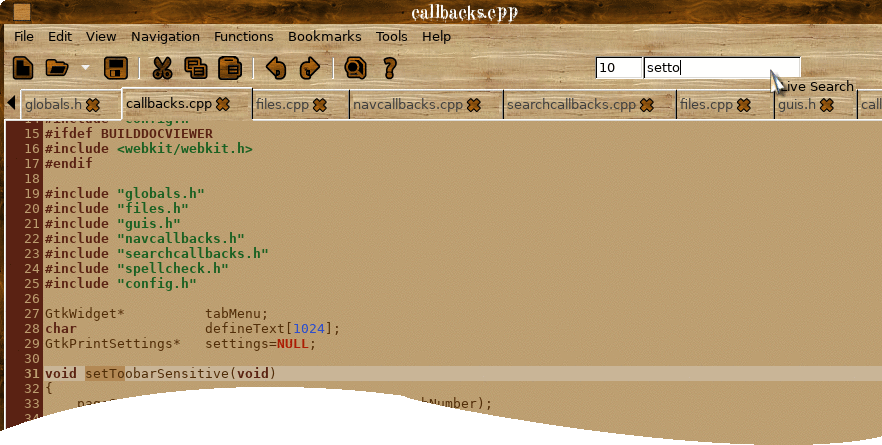
Affichage séparé:
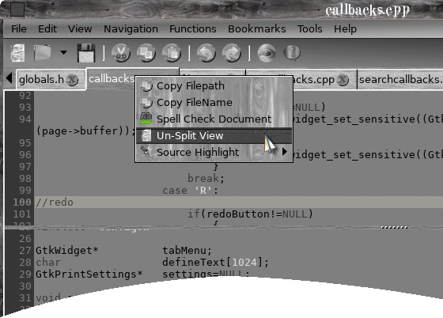
La coloration syntaxique en cours est sélectionnable via le menu contextuel de l'onglet comme ceci:
Attention, la coloration par défaut pour un fichier est définie par son type MIME et peut, donc, changer après avoir sauvegardé ou chargé. D'habitude, les types MIME d'un fichier ne peuvent pas être définis manuellement, mais dépendent de ce que fait le système pour les définir, des extensions de fichier, etc.
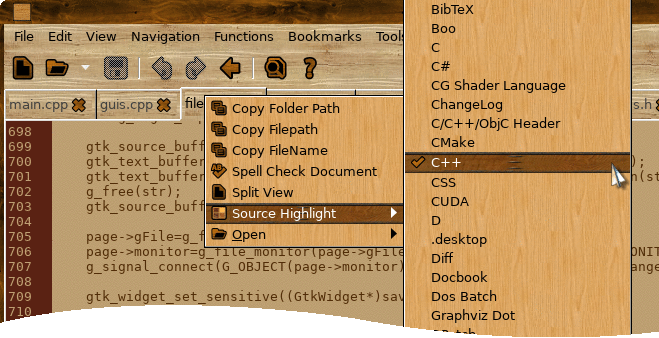
Vous pouvez aussi activer/désactiver diverses parties depuis le menu 'Affichage':
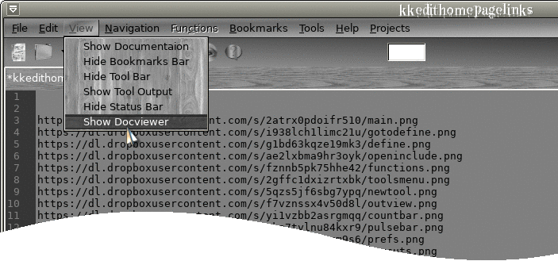
Complétion de code
Si vous avez activé l'option 'Montrer automatiquement les complétions' dans les préférences, vous pourrez compléter votre code parmi diverses options montrées durant la saisie comme ceci:
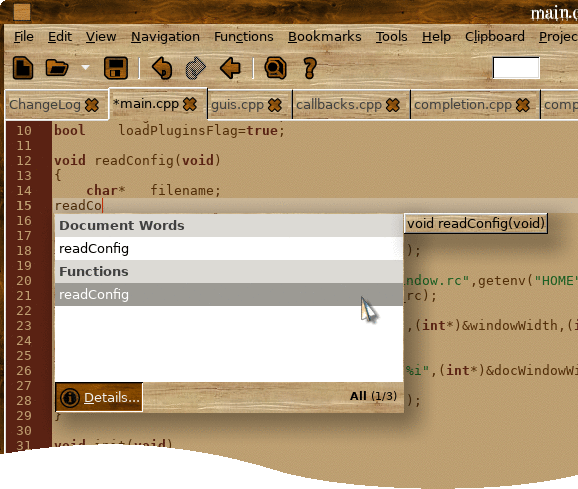
Le nombre de lettres par mot avant l'apparition de la fenêtre pop-up est défini dans les préférences.
Vous pouvez également forcer l'apparition du dialogue de complétion en utilisant un raccourci clavier (défini via les préférences) comme ceci:
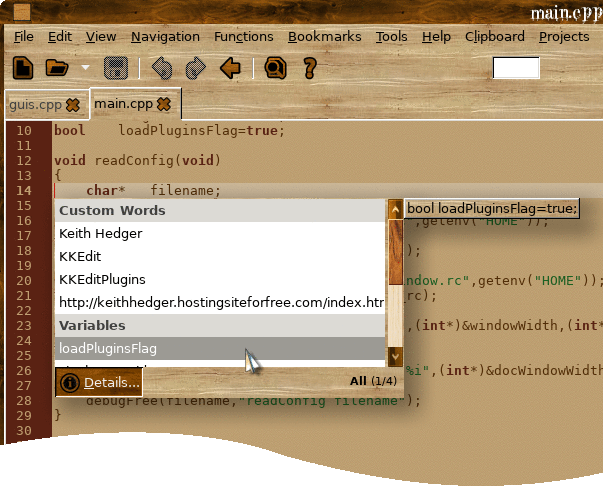
Comme vous pouvez le voir, vous pouvez ajouter une liste de mots personnalisés au dialogue de complétion en créant le fichier '~/.KKEdit/customcompletions', puis en ajoutant des mots à ce dernier. Le fichier DOIT se terminer par une nouvelle ligne. Si le fichier n'existe pas, aucun mot personnalisé ne sera affiché.
Les complétions de fonctions et de variables peuvent être accompagnées de leurs définitions en basculant le bouton 'Détails' sur activé. Les mots personnalisés et ceux des documents n'ont pas de détails.
Création de documentation avece Doxygen
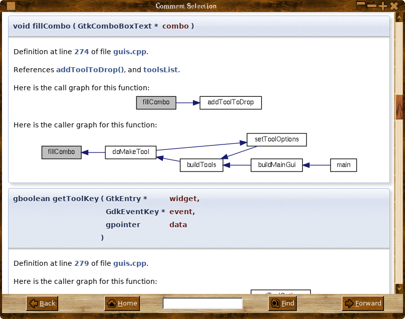
Vous pouvez créer une documentation pour votre code, si vous avez installé doxygen, en sélectionnant "Générer la documentation" (Create Documentation) depuis le menu 'Fichier', la documentation sera créée dans le dossier en cours et sera affichée avec soit le visionneur de documents intégré, soit le navigateur du système. La première fois que vous exécutez cette action, il peut y avoir un petit délai pendant que les fichiers initiales sont créés par doxygen. Après cela, réitérer l'action mettra juste à jour les fichiers. Si un fichier nommé 'Doxyfile' est absent dans le répertoire en cours, un fichier de configuration par défaut sera créé pour vous.Vous pouvez l'éditer manuellement à votre guise. Je vous recommende d'installer Graphviz pour ses jolis organigrammes. La plupart des distributions disposent de paquets pour ces deux applications.
Si doxygen n'est PAS installé, vous n'aurez pas le menu "Générer la documentation". Il suffit de l'installer et (optionnellement) Graphviz, puis, de redémarrer KKEdit et le menu réapparaîtra.
Intégration des documents
Il existe une intégration des documents créés par doxygen lorsque, et uniquement lorsque le visionneur de documents intégré est utilisé. Sélectionnez 'Documentation' depuis le menu 'Fichier' et le visionneur de documents apparaître au-dessus. Il peut y avoir un léger délai la première fois à cause de la création des fichiers nécessaires par doxygen. Les prochaines utilisations seront plus rapides vu que doxygen se contentera de mettre à jour les fichiers requis.
Cliquez sur l'onglet 'Fichier' pour obtenir une liste des fichiers, puis, cliquez en maintenant MAJ sur le nom du fichier comme ceci:
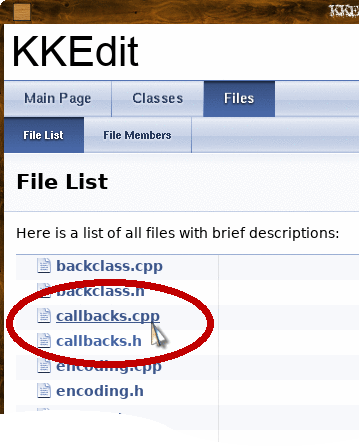
Le visionneur de documents ouvrira la page et soit l'éditeur ouvrira également le fichier, soit il ira à l'onglet approprié comme ceci:
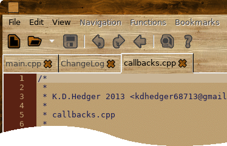
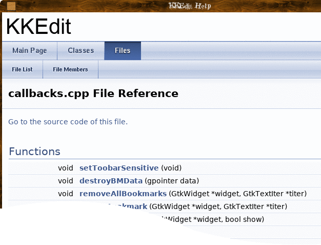
Sélectionnez une fonction, par exemple:
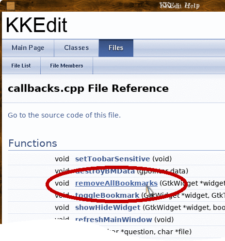
Montre ceci:
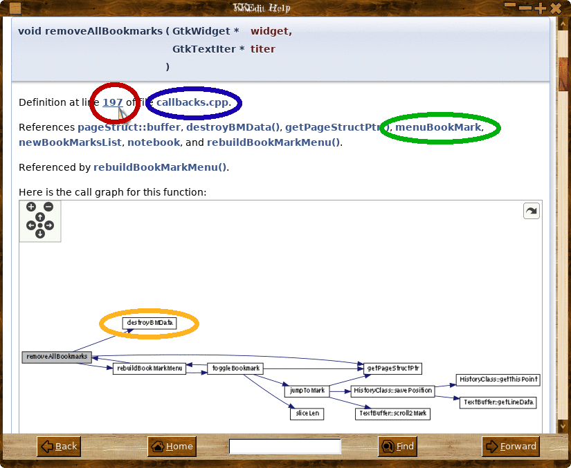
À partir de là, vous pouvez cliquez en maintenant MAJ sur le numéro de ligne (en rouge) pour ouvrir le fichier ou aller à l'onglet et aller à la ligne dans l'éditeur et les documents comme ceci:

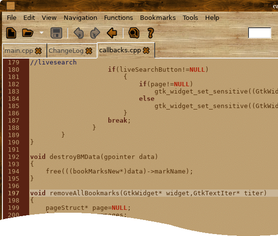
Cliquer en maintenant MAJ sur le nom du fichier (en bleu) ouvrira le fichier ou ira à l'onglet comme ci-dessues.
Cliquer sur une référence (en vert) vous mènera à la référence dans la documentation où vous pouvez à nouveau sélectionner un numéro de ligne, un fichier, etc.
Vous pouvez également cliquer sur les nombreuses boîtes du graphique pour aller à une définition de fonction.
Vous pouvez ouvrir un fichier en maintenant MAJ, puis, en cliquant sur une boîte dans le graphique des dépendances entre les en-têtes pour un fichier donné comme ceci:
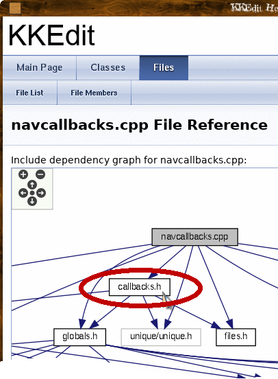
Ceci va ouvrir le fichier ou aller à l'onglet approprié comme ci-dessus.
Vous pouvez régler le fichier généré par défaut par doxygen pour ajouter ou retirer des informations dans le navigateur.
Le principal changement que vous voulez faire dans le fichier 'Doxyfile' est de changer le nom du projet. Ouvrez le fichier 'doxyfile' qui sera dans le même dossier que votre code source et modifiez la ligne "PROJECT_NAME=Mon projet" avec quelque chose de plus approprié.
Pour le moment, la documentation doit être laissé dans le dossier html créé dans le dossier avec votre code source, cela changera probablement plus tard pour vous permettre de régler le dossier de la documentation.
Si vous souhaitez plus d'informations sur les différentes options disponibles dans le fichier 'doxyfile', exécutez 'doxygen -g' depuis la ligne de commande et un fichier Doxyfile très commenté par défaut sera créé.
Greffons
KKedit prend désormais en charge les greffons écrits en C, un exemple de greffon est disponible sur la page des greffons, cec ajoutera un élément de menu dans le menu 'Aide' qui affichera toutes les fonctions actuellement prises en charge par le système de greffon. C'est encore en cours de développement, donc, les bogues et suggestions sont les bienvenues. Je serai en train d'ajouter des greffons supplémentaires qui seront disponibles à partir de ce site, mais si vous en écrivez un ou que ,tout simplement, vous avez une idée de greffon, s'il vous plaît, faites-le moi savoir.
Les greffons peuvent être activés ou désactivés dans le menu 'Préférences des greffons' depuis le menu 'Édition'.
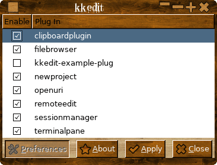
Il y a deux dossiers de plugins qui seront parcourus pour la recherche de greffons: "/usr/share/KKEdit/plugins" et "~/.KKEdit/plugins". Les greffons peuvent être dans des sous-dossiers et devraient être nommés comme ceci: 'libPLUGNAME.so'.
Allez voir l'exemple de greffon installé pour les fonctions et un Makefile de base.
Tous les détails et les
greffons supplémentaires peuvent être trouvés ici:
Obtenez-le ici!
KKEdit
Dépendances
Un bureau et un serveur Xorg raisonnablement récent.
gtk-2.24.13
gtksourceview-2.11.1
ctags
Autotools
libunique-1.1.6
wget ou curl
webkitgtk-1.10.x (optionnel mais recommandé)
aspell-0.60.6.1 (optionnel mais recommandé)
GtkSu (optionnel mais recommandé)
Manpage Editor (optionnel mais recommandé)
Glib-Networking (optionnel mais recommandé)
webkit est est une dépendance optionnelle si vous voulez construire le visionneur de documents Gtk-doc, désactivez-le en ajoutant --disable-docviewer à ./configure ou ./autogen.sh.
La vérification orthographique via aspell est facultative et peut être activé par l'option '--enable-aspell' passée à ./configure ou ./autogen.sh.
La présence de "GtkSu" et de "Manpage Editor" sont détectés au moment de la configuration et, si installé(s), sera ou seront utilisés. Dans le cas de GtkSu, il est utilisé pour obtenir les privilèges administrateur lors de l'ouverture d'un éditeur en tant qu'administrateur dans le menu 'Fichier'. Si Manpage Editor est détecté, un élément de menu est ajouté au menu 'Fichier', les deux peuvent être téléchargés à partir de ce site.
Glib-Networking est un dépendance d'exécution et est utilisé pour faire une recherche sur google si les options "Ouvrir la page de manuel" et "Chercher dans les documents Gtk" ne trouvent rien.
Si vous utilisez une distribution basée sur les codes sources comme LFS ou Slackware, vous devriez avoir tous ces dépendances ou la plupart installées. Si vous utilisez une distribution pré-embaquetée comme debian et que vous n'avez pas encore compilé à partir des sources, vous pourriez avoir besoin d'installer quelques paquets de développement, à savoir pour debian (de mémoire) les paquets build-essential et ceux en '-dev' pour gtk2 et
gtksourceview. Consultez la documentation de votre distribution et les forums correspondants pour recevoir de l'aide sur la compilation de logiciels.
Compilation
Décompressez l'archive, allez dans le dossier KKEdit et exécutez:
./autogen.sh --prefix=/usr --enable-aspell --enable-docviewer
make
sudo make install
(./configure peut maintenant être utilisé à la place de ./autogen.sh - pas besoin de autotools).
Veuillez LIRE le fichier README!
Voir le fichier 'INSTALL' pour plus de détails.
Rapports de bogues
S'il vous plaît, envoyez des rapports de bogues, des suggestions de fonctionnalités, de grands sacs de bijoux, etc à:
kdhedger68713@gmail.com
Je vous répondrai dès que possible.
Accueil